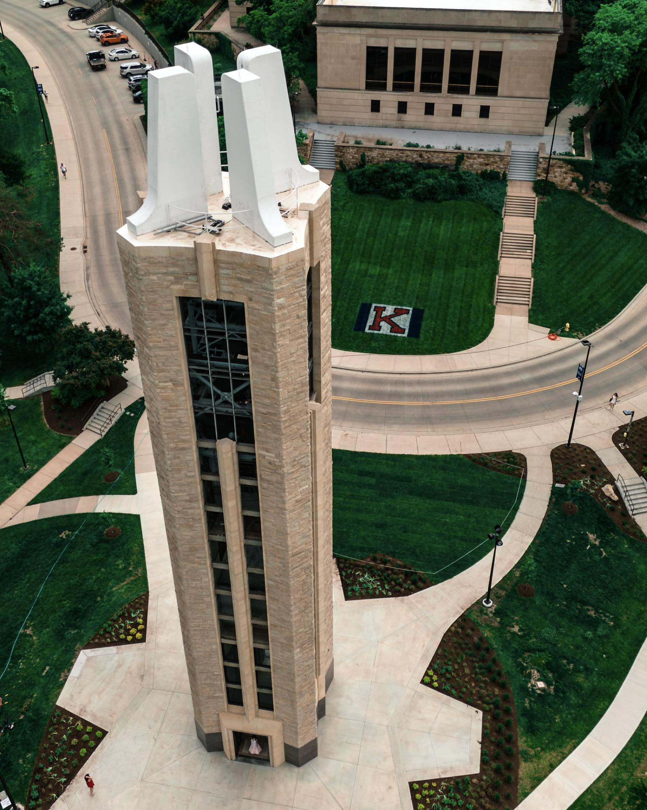

Hello, I’m
Soumyadeep Misra
I am Soumyadeep Misra, a third-year Ph.D. student in Mathematics at the University of Kansas , working under the guidance of Prof. Hai Long Dao . I am interested in commutative algebra and its interactions with combinatorics, especially Stanley–Reisner theory and graph-theoretic aspects. I am currently serving as Treasurer for the Graduate Student Organization in the Department of Mathematics.

📍 Lawrence, Kansas
✉️ soumyadeep@ku.edu
